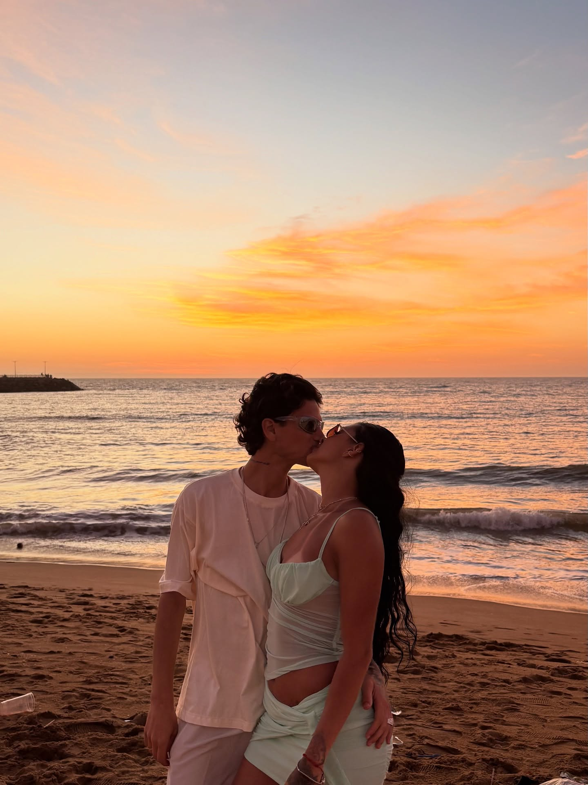
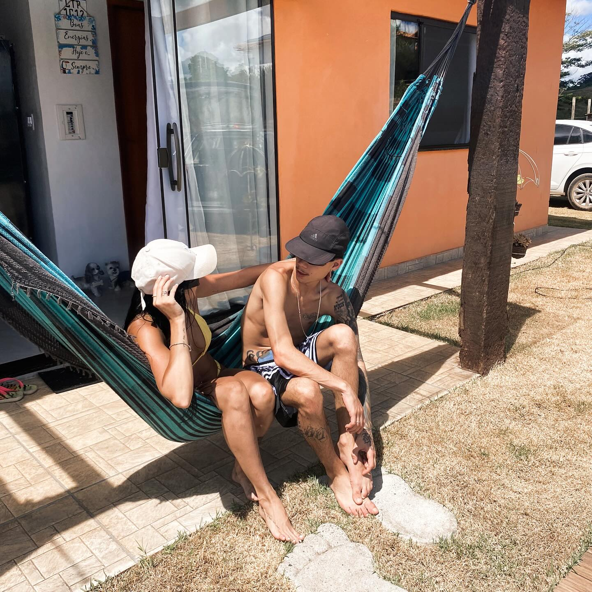

O encontro
Conte aqui como Natan e Isadora se conheceram.
você está convidado
Natan & Isadora
10 · 04 · 2027
toque no selo para abrir
natan & isadora
e queremos você perto da gente.
Alguns encontros chegam devagar e, quando percebemos, já mudaram tudo. No dia 10 de abril de 2027, vamos celebrar o começo de um novo capítulo e esperamos dividir esse momento com as pessoas que fazem parte da nossa história.

onde tudo faz sentido.
nossa história
cada capítulo trouxe a gente até aqui.
Conte aqui como Natan e Isadora se conheceram.
Momentos, viagens, conquistas e pequenas histórias que marcaram o casal.
Conte aqui como foi o pedido e quando decidiram dar esse próximo passo.
O próximo capítulo começa com você ao nosso lado.

reserve esta data
Juiz de Fora · Minas Gerais · 16h
“Assim eles já não são dois, mas uma só carne. Portanto, o que Deus uniu, ninguém separe.”
Mateus 19:6
Natan & Isadora
com a bênção de Deus e de nossos pais
Cristiane Rodrigues Diniz Braga e Brunno Ferreira Gomes
Tania Rezende Delgado e Alonso da Silva Delgado
até o nosso sim
o grande dia
Teixeiras · Juiz de Fora, MG
Salvaterra · Juiz de Fora, MG
Traje: social ou esporte fino.
com carinho
Quem quiser nos ajudar pode contribuir por PIX. Não é a compra de um presente: o valor vai direto para a nossa conta, com todo o carinho.
sua presença
Confirme sua presença para que possamos preparar tudo com carinho.